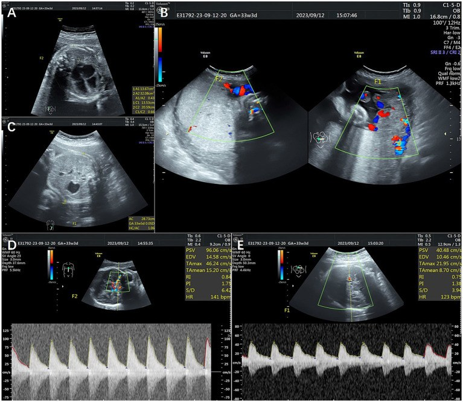
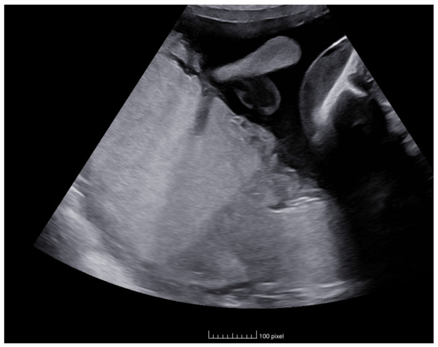
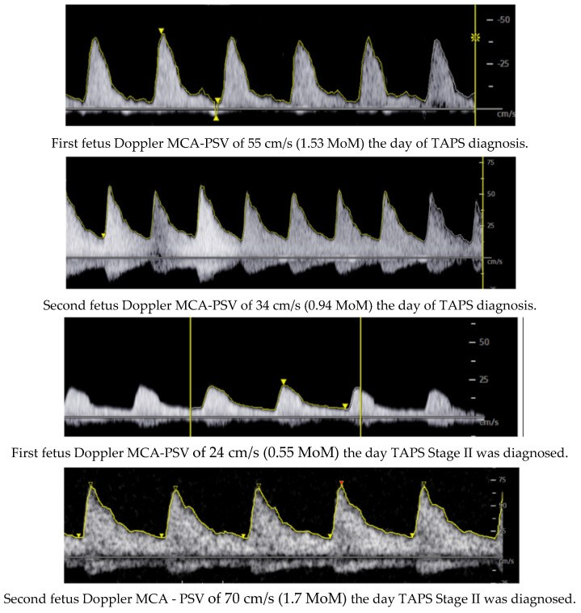

1637 — TAPS sau laser TTTS: MCA-PSV, phân độ 1–5 & khi nào truyền máu trong tử cung / Post-laser twin anemia–polycythemia sequence
Tags: pattern:taps pattern:lech-mca-psv pattern:thai-thieu-mau pattern:thai-da-hong-cau vung:thai-nhi vung:banh-nhau score:TAPS protocol:SA-Doppler-MCA protocol:truyen-mau-trong-tu-cung
Mức chắc chắn (certainty): tổng hợp y văn (literature synthesis) — số liệu từ sổ bộ TAPS quốc tế 164 ca sau laser (PMC7355738) và 370 ca (PMC7497010), đoàn hệ tổn thương não 256 trẻ (PMC13040136), nghiên cứu tiền cứu về tiêu chuẩn chẩn đoán (PMC7563169), nghiên cứu tiền cứu về dấu hiệu phụ (PMC7496878); ca nguyên văn dùng cho quiz: PMC11433027 (Fortún Agud M và cộng sự, 2024).
1. Tổng quan bệnh học – cơ chế hình ảnh
1.1. Vì sao "truyền máu chậm" không gây đa ối–thiểu ối
- Bánh nhau một bánh nhau (monochorionic) luôn có các miệng nối mạch máu. TTTS do miệng nối lớn (động mạch–tĩnh mạch, đường kính ~2–3 mm) truyền thể tích nhanh → thai nhận đa ối, thai cho thiểu ối (bài 566, 1611).
- TAPS do miệng nối rất nhỏ (< 1 mm, chủ yếu 1 chiều) truyền hồng cầu từ từ qua nhiều tuần: thai cho mất hồng cầu → thiếu máu + tăng hồng cầu lưới (reticulocytosis); thai nhận đa hồng cầu. Vì thể tích huyết tương thay đổi chậm, không có cặp đa ối–thiểu ối — đây là điểm khác biệt cốt lõi trên siêu âm.
- Sau laser: đốt hết miệng nối lớn nhưng còn miệng nối nhỏ tồn dư hoặc tái thông → TAPS sau laser. Đốt theo Solomon (đốt cả đường xích đạo) giảm tái phát/TAPS còn 4,2% so với 18,1% khi đốt chọn lọc (bài 1611).
- Tần suất: "tới 13%" theo ISUOG 2025 (PMC11788470); 6,4% trong đoàn hệ TTTS sớm (PMC13040126); trong sổ bộ 164 ca sau laser, 92% chẩn đoán trước sinh, 8% chỉ phát hiện sau sinh (PMC7355738).
- Thời điểm xuất hiện: trung vị 14 ngày sau laser (IQR 7–28; khoảng 1–119 ngày) — nghĩa là 2 tuần đầu là cửa sổ bắt buộc phải đo MCA-PSV hai thai (PMC7355738).
1.2. Vì sao MCA-PSV phản ánh huyết sắc tố
- Thiếu máu → độ nhớt máu giảm + cung lượng tim tăng để bù oxy → vận tốc đỉnh tâm thu động mạch não giữa (MCA-PSV) tăng. Đa hồng cầu → độ nhớt tăng → MCA-PSV giảm.
- Vì vậy MCA-PSV là đại lượng thay thế cho hemoglobin, biểu diễn dưới dạng bội số trung vị (multiples of the median, MoM) theo tuổi thai — không dùng cm/s thô để so sánh giữa hai thai khác tuổi.
- Định lượng phải nhớ:
- Thai cho (donor): MCA-PSV > 1,5 MoM.
- Thai nhận (recipient): < 1,0 MoM (giai đoạn I), < 0,8 MoM (giai đoạn II).
- Chênh lệch (delta) > 0,5 MoM là tiêu chuẩn bổ sung; ngưỡng Δ > 0,373 MoM làm tăng gấp ~3 lần số ca được gọi TAPS (19,2% so với 6,3% theo tiêu chuẩn Delphi) (PMC7563169).
- Chẩn đoán xác định sau sinh: chênh hemoglobin giữa hai thai > 8,0 g/dL kèm tỉ lệ hồng cầu lưới > 1,7 (PMC7355738) — thiếu một trong hai thì phải loại trừ nguyên nhân thiếu máu khác (miễn dịch, nhiễm parvovirus B19, truyền máu thai–mẹ).
2. Mẫu hình + chẩn đoán phân biệt theo vị trí (gamut)
2.1. Gamut "MCA-PSV lệch sau laser" — theo thứ tự phải loại trừ
- TAPS sau laser thật: donor > 1,5 MoM, recipient ≤ 1,0 MoM (hoặc < 0,8 nếu giai đoạn II), không đa ối–thiểu ối; bánh nhau hai màu/thickness khác nhau, thai cho tim to, thai nhận gan "trời sao".
- TTTS tái phát: có cặp DVP ≥ 8 cm / ≤ 2 cm, bàng quang thai cho không thấy; MCA-PSV có thể lệch nhưng không phải tiêu chuẩn chính (bài 1611).
- sFGR / bất tương xứng tăng trưởng: chênh cân nặng ≥ 25%, Doppler rốn bất thường, MCA-PSV thường bình thường hoặc tăng do thiếu oxy (không giảm ở thai kia).
- Thiếu máu miễn dịch (Rh/ABO) hoặc nhiễm parvovirus B19: cả hai thai có thể thiếu máu, không có bánh nhau một bánh nhau/hai màu; tiền sử mẹ, kháng thể bất thường, IgM parvovirus.
- Đa hồng cầu thai nhận do truyền máu thai–thai cấp (sau chết một thai, thủ thuật): bối cảnh cấp, thường kèm biến cố.
- Lỗi đo MCA-PSV: góc > 15°, đo khi thai thở, nhịp tim bất thường, đặt cửa sổ sai vị trí → lệch giả.
2.2. Mẫu hình "đọc đúng ca TAPS"
- Đúng bệnh: MCA-PSV một cao – một thấp (chênh > 0,5 MoM), ối bình thường hai bên, bánh nhau khác màu/độ dày, thai cho tim to (chỉ số tim–ngực tăng), thai nhận gan tăng âm lan tỏa.
- Sai bệnh: chỉ có đa ối–thiểu ối (TTTS); chỉ có chênh cân nặng (sFGR); MCA-PSV lệch nhẹ < 0,5 MoM (biến thể, không gọi TAPS).
- Mẹo nhớ 3 dấu hiệu phụ: BÁNH (dichotomy 44%) — TIM (cardiomegaly 70%) — GAN (starry-sky 66%) (PMC7496878).

Các dấu hiệu phụ trong TAPS: (A) tim to với chỉ số tim–ngực 0,66 ở thai cho; (C) gan "trời sao" (tăng âm lan tỏa) ở thai nhận; (D, E) MCA-PSV hai thai. Nguồn: Zhang Y và cộng sự, Front Med (Lausanne) 2024, PMC11810567, CC BY 4.0 — ảnh nguyên bản, không crop.
Bánh nhau "hai màu" (placental dichotomy) trong TAPS: vùng của thai thiếu máu và vùng của thai đa hồng cầu khác độ hồi âm/độ dày. Nguồn: Fortún Agud M và cộng sự, Life (Basel) 2024, PMC11433027, CC BY 4.0 — ảnh nguyên bản, không crop.3. Bảng so sánh phân biệt (ma trận đối chiếu)
| Thực thể (entity) | Hình ảnh điển hình (siêu âm/Doppler) | Chốt vào (rule-in) | Chốt loại (rule-out) | Gợi ý xác nhận |
|---|---|---|---|---|
| TAPS sau laser | MCA-PSV donor > 1,5 MoM, recipient < 1,0 MoM; ối bình thường; bánh nhau hai màu | Chênh MCA-PSV > 0,5 MoM, hai thai, ối bình thường | Có cặp DVP ≥ 8 cm/≤ 2 cm → TTTS tái phát, không phải TAPS đơn thuần | Đo lại 3–7 ngày; sau sinh ΔHb > 8 g/dL + reticulocyte ratio > 1,7 |
| TTTS tái phát | Đa ối ≥ 8 cm + thiểu ối ≤ 2 cm, bàng quang thai cho không thấy | Cặp ngưỡng ối + bàng quang không thấy | Ối bình thường hai bên | DVP hai buồng, Quintero/Delphi 2025 (bài 1611) |
| sFGR | Chênh EFW ≥ 25%, Doppler rốn bất thường, ối lệch nhẹ | Chênh cân nặng + Doppler rốn, không đủ tiêu chuẩn ối | MCA-PSV donor > 1,5 MoM + recipient < 1,0 MoM → TAPS | EFW, UA Doppler, theo dõi tăng trưởng |
| Thiếu máu miễn dịch / parvovirus | Cả hai thai MCA-PSV cao, có thể phù; bánh nhau bình thường | Cả hai > 1,5 MoM + kháng thể mẹ/IgM parvovirus | Chỉ một thai cao, thai kia < 1,0 MoM | Kháng thể bất thường, PCR parvovirus, siêu âm gan/lách |
| Đa hồng cầu do truyền máu cấp | Thai nhận MCA-PSV rất thấp, có thể suy tim; bối cảnh chết một thai | Biến cố cấp + MCA-PSV thấp đột ngột | Chênh mạn tính, ối bình thường | Bối cảnh lâm sàng, Hb sau sinh |
| Lỗi đo MCA-PSV | Góc Doppler > 15°, đo khi thai thở, nhịp tim bất thường | Sửa góc/vị trí và đo lại → lệch biến mất | Lệch tái lập được trên 3 lần đo chuẩn | Đo lại đúng kỹ thuật (mục 4.1) |
3.1. Ba câu hỏi chốt trong 30 giây
- Có đa ối–thiểu ối không? Có → nghĩ TTTS tái phát trước, TAPS chỉ là hàng thứ hai.
- MCA-PSV hai thai lệch bao nhiêu MoM? > 0,5 MoM + một thai > 1,5 MoM → TAPS.
- Có dấu hiệu nặng chưa? Tim thai cho suy (giai đoạn III) hoặc phù (IV) → phải can thiệp, không chờ.
4. Protocol chụp + hệ phân độ
4.1. Kỹ thuật đo MCA-PSV (sai số quyết định chẩn đoán)
- Mặt cắt ngang đầu thai tại đa giác Willis, phóng to, động mạch não giữa gần nguồn (trong 1 cm đầu); cửa sổ Doppler 1–2 mm; góc ≤ 15° (lý tưởng 0°).
- Đo 3 lần liên tiếp khi thai không thở/không cử động, lấy giá trị cao nhất; ghi cm/s và MoM; cùng một người đo khi có thể.
- Lịch sau laser: hàng tuần trong 2 tuần đầu (cửa sổ TAPS trung vị 14 ngày), sau đó mỗi 2 tuần đến khi sinh; mỗi lần đo cả hai thai + DVP hai buồng + bàng quang + Doppler rốn/ống tĩnh mạch.
- Sau 24 tuần: thêm tăng trưởng, cổ tử cung, dấu hiệu sinh non.
4.2. Phân độ TAPS (Slaghekke – Tollenaar)
| Giai đoạn | Tiêu chuẩn trước sinh | Ý nghĩa |
|---|---|---|
| I | Donor > 1,5 MoM, recipient < 1,0 MoM; không dấu hiệu khác | Thiếu máu mạn, chưa suy tim |
| II | Thêm recipient < 0,8 MoM | Đa hồng cầu rõ ở thai nhận |
| III | Thêm suy tim thai cho: mất/thu đảo dòng cuối tâm trương động mạch rốn, ống tĩnh mạch đập theo nhịp tim, đảo sóng a, hở van ba lá | Bắt đầu có tổn thương cơ tim |
| IV | Phù thai (hydrops) | Nguy cơ tử vong cao, chỉ định can thiệp |
| V | Chết một/hai thai | Kết cục xấu nhất |
- Chẩn đoán sau sinh: ΔHb > 8,0 g/dL + tỉ lệ hồng cầu lưới > 1,7 (PMC7355738).
- Lưu ý: phân độ có thể thoái lui hoặc nhảy bậc; không tuyến tính (ca PMC11433027 từ giai đoạn I tiến II trong vài tuần).
flowchart TD
A[Sau laser TTTS<br/>sieu am hang tuan 2 tuan dau] --> B[Do MCA PSV hai thai<br/>DVP hai buong<br/>Doppler ron va ong tinh mach]
B --> C{Donor tren 1,5 MoM<br/>va recipient duoi 1,0 MoM}
C -->|Khong| D[Tiep tuc theo doi<br/>khong goi TAPS]
C -->|Co| E{Co da oi tren 8 cm<br/>va thieu oi duoi 2 cm}
E -->|Co| F[TTTS tai phat - phan giai doan lai<br/>xem bai 1611]
E -->|Khong| G[Xac dinh giai doan TAPS 1 den 5]
G --> H{Giai doan I on dinh}
H -->|Co| I[Theo doi ky: MCA PSV moi 1 den 2 tuan]
H -->|Khong| J{Giai doan III hoac IV<br/>hoac II tien trien}
J -->|Co| K[Truyen mau trong tu cung<br/>cong hoac truyen thay mot phan]
J -->|Khong| I
K --> L[Do lai MCA PSV sau 24 den 48 gio<br/>danh gia dap ung]
L --> M{Tuoi thai tren 32 den 34 tuan<br/>hoac thai suy}
M -->|Co| N[Can nhac sinh<br/>co corticoid]
M -->|Khong| I
I --> B
4.3. Lựa chọn xử trí và kết cục (sổ bộ quốc tế)
- 164 ca sau laser (PMC7355738): theo dõi 43%, truyền máu trong tử cung ± truyền thay một phần 29%, laser lần 2 15%, giảm thai chọn lọc 7%, sinh ngay 6%, chấm dứt thai kỳ 1%.
- Kết cục: tuổi thai sinh trung vị 31,7 tuần (IQR 28,6–33,7); tử vong chu sinh 25% (83/327) — thai cho 37% (61/164) so với thai nhận 14% (22/163); giai đoạn IV: OR 3,4 (1,4–26,0); là thai cho: OR 4,2 (2,1–8,3); bệnh nặng sơ sinh gắn với tuổi thai sinh OR 1,5 mỗi tuần.
- 370 ca (PMC7497010): tử vong chu sinh 17–18% ở nhóm theo dõi/laser/truyền máu, 10% khi sinh ngay; bệnh nặng sơ sinh 31–49% tùy nhóm — không có chiến lược nào vượt trội rõ, nên chọn theo giai đoạn, tuổi thai và kinh nghiệm trung tâm.
- Thần kinh: tổn thương não 16,8% (43/256), 93% xuất hiện sau sinh, nặng 7,4%; không khác giữa TAPS tự phát 13,5% và sau laser 21,3% (p = 0,1); tuổi thai sinh là yếu tố nguy cơ độc lập OR 1,31 mỗi tuần (KTC 1,15–1,50) (PMC13040136). Báo cáo cũ: NDI nặng 9%.
- Ngưỡng can thiệp thực hành: truyền máu trong tử cung khi giai đoạn III–IV hoặc II tiến triển nhanh; một số trung tâm truyền máu sớm khi MCA-PSV donor rất cao kèm dấu hiệu suy tim. Chưa có ngưỡng Hb tuyệt đối thống nhất — ghi rõ "chưa rõ" thay vì bịa số.
5. Biến thể bình thường và cạm bẫy
- ΔPSV làm tăng chẩn đoán quá mức: dùng Δ > 0,373 MoM cho 19,2% ca được gọi TAPS, so với 7,8% (tiêu chuẩn kinh điển) và 6,3% (Delphi) (PMC7563169). Gọi TAPS sai → truyền máu/sinh non không cần thiết.
- 8% TAPS chỉ phát hiện sau sinh: MCA-PSV bình thường một lần không loại trừ; nếu sau sinh chênh Hb > 8 g/dL + hồng cầu lưới > 1,7 vẫn là TAPS.
- Tự thoái lui có thật: trong sổ bộ, 5 bánh nhau không còn miệng nối ở ca TAPS tự khỏi — theo dõi giai đoạn I ổn định là hợp lý, không can thiệp ngay.
- Tim to ở thai CHO không phải bệnh tim: cardiomegaly 70% là phản ứng tăng cung lượng do thiếu máu; đừng chẩn đoán bệnh cơ tim.
- Gan "trời sao" ở thai NHẬN: hình ảnh tăng âm lan tỏa do đa hồng cầu/ứ máu — ngược trực giác với "gan thai bệnh".
- Nhãn thai: sau laser vai trò cho/nhận có thể đảo; luôn giữ nhãn cố định theo tim/tĩnh mạch rốn, không đổi theo "nhận/cho".
- Không có đa ối–thiểu ối không loại trừ TAPS: thiếu máu mạn không làm thay đổi thể tích ối — đây là điểm khác TTTS.
- Lỗi kỹ thuật Doppler: góc > 15°, thai thở, cửa sổ đặt sai → lệch giả; luôn đo lại trước khi can thiệp.
6. Tự lượng giá — Blind Quiz
Ca 1 — MCA-PSV đổi trong 2 tuần

- Gợi ý lâm sàng: song thai một bánh nhau, theo dõi sau laser; ối hai bên bình thường.
- Câu hỏi: (1) Đọc 4 phổ Doppler. (2) Chẩn đoán và giai đoạn? (3) Vì sao không gọi TTTS tái phát?
Bấm để hiện đáp án (findings + chẩn đoán)
- Dấu hiệu: ban đầu thai 1 55 cm/s (1,53 MoM) và thai 2 34 cm/s (0,94 MoM); sau đó thai 1 24 cm/s (0,55 MoM) và thai 2 70 cm/s (1,7 MoM) — đảo chiều mức tưới máu não.
- Chẩn đoán: TAPS sau laser, giai đoạn II (donor > 1,5 MoM, recipient < 0,8 MoM); thai 1 là recipient (đa hồng cầu), thai 2 là donor (thiếu máu).
- Vì sao không TTTS tái phát: không có cặp đa ối ≥ 8 cm/thiểu ối ≤ 2 cm — TAPS chỉ làm lệch MCA-PSV.
- Nguồn ảnh: Fortún Agud M và cộng sự, Life (Basel) 2024, PMC11433027, CC BY 4.0.
Ca 2 — bánh nhau "hai màu"
- Gợi ý lâm sàng: song thai một bánh nhau, một thai MCA-PSV cao.
- Câu hỏi: (1) Mô tả bất thường bánh nhau. (2) Ba dấu hiệu phụ của TAPS và tần suất? (3) Dấu hiệu nào ở thai nào?
Bấm để hiện đáp án (findings + chẩn đoán)
- Dấu hiệu: bánh nhau hai vùng khác độ hồi âm/độ dày (placental dichotomy) — vùng của thai thiếu máu và vùng của thai đa hồng cầu.
- Ba dấu hiệu phụ: dichotomy 44% (40/91), tim to ở thai cho 70% (64/91), gan "trời sao" ở thai nhận 66% (53/80) (PMC7496878).
- Vì sao quan trọng: khi MCA-PSV ở ngưỡng mờ, các dấu hiệu này nâng hoặc hạ xác suất TAPS; nhưng không thay thế MCA-PSV.
- Nguồn ảnh: Fortún Agud M và cộng sự, Life (Basel) 2024, PMC11433027, CC BY 4.0.
Ca 3 — quyết định truyền máu
- Gợi ý lâm sàng: 27 tuần, 3 tuần sau laser; thai A MCA-PSV 1,9 MoM, tim to, ống tĩnh mạch đập theo nhịp tim; thai B 0,6 MoM; DVP 4,5 cm và 4,0 cm.
- Câu hỏi: (1) Giai đoạn TAPS? (2) Có chỉ định truyền máu trong tử cung không? (3) Nếu mẹ từ chối can thiệp thì theo dõi gì?
Bấm để hiện đáp án (findings + chẩn đoán)
- Giai đoạn: TAPS giai đoạn III (donor > 1,5 MoM + recipient < 0,8 MoM + suy tim thai cho: ống tĩnh mạch đập theo nhịp tim).
- Chỉ định: có — truyền máu trong tử cung ± truyền thay một phần cho thai cho; mục tiêu nâng Hb, giảm suy tim, kéo dài thai kỳ. Trong sổ bộ, 29% ca sau laser được truyền máu (PMC7355738); tử vong chu sinh nhóm truyền máu 18% (PMC7497010).
- Nếu từ chối: theo dõi MCA-PSV 24–48 giờ/lần, Doppler ống tĩnh mạch, phù thai, DVP; corticosteroid nếu nguy cơ sinh < 34 tuần; chuẩn bị sinh tại trung tâm có hồi sức sơ sinh. Tư vấn: tử vong chu sinh 25%, thai cho 37% (PMC7355738); tổn thương não 16,8%, NDI nặng cũ 9% (PMC13040136).
- Nguồn số liệu: PMC7355738, PMC7497010, PMC13040136, PMC7563169.
Bài liên quan chéo
- 1611 – TTTS tái phát sau laser: chẩn đoán lại, phân giai đoạn Delphi 2025 & laser lần 2
- 566 – Song thai: xác định màng đệm–màng ối & TTTS/TAPS
- 1635 – Vỡ ối non tháng sau can thiệp bào thai
- 587 – Dự phòng sinh non sau laser TTTS
- 1636 – Theo dõi thần kinh dài hạn sau một thai chết trong song thai một bánh nhau
Ảnh
images/1637_taps-sau-laser_US_PMC11433027-F1.jpg— bánh nhau hai màu (PMC11433027, CC BY 4.0).images/1637_taps-sau-laser_US_PMC11433027-F3.jpg— diễn tiến MCA-PSV hai thai (PMC11433027, CC BY 4.0).images/1637_taps-sau-laser_US_PMC11810567-F1.jpg— tim to, gan "trời sao", MCA-PSV (PMC11810567, CC BY 4.0).- Nguồn và giấy phép chi tiết:
images/CREDITS.md; nguồn học thuật:sources.md.
Không dùng để chẩn đoán độc lập khi chưa có người hướng dẫn.